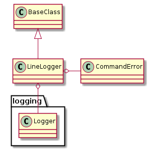
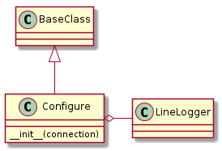
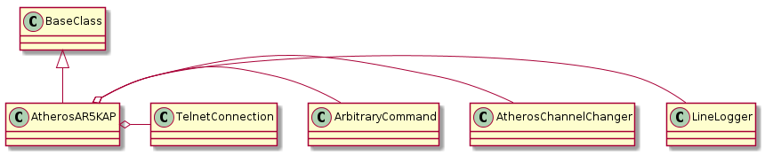
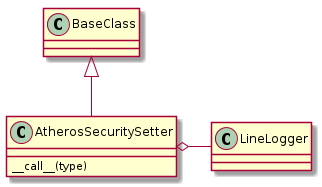
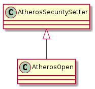
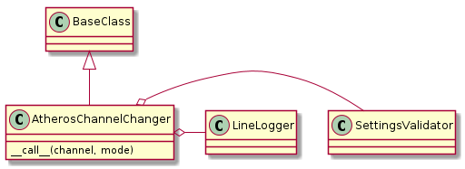

This is a module to hold controllers for Access Points with Atheros-based chipsets. It is based on the Atheros’ shell scripts found in /etc/ath on one Atheros device.
EMPTY_STRING = ''
FIVE_GHZ_SUFFIX = '_2'
TWO_POINT_FOUR = '2.4'
FIVE = '5'
BAND_ID = {TWO_POINT_FOUR:0, FIVE:1}
G_BANDWIDTH = 'HT20'
A_LOWER_BANDWIDTH = 'HT40PLUS'
A_UPPER_BANDWIDTH = 'HT40MINUS'
The Atheros classes make use of some imported classes. Rather than re-document them here I’ll just provide the relevant autosummary documentation.
BaseClass() |
This class holds the minimum common features. |
TelnetConnection([port, prompt, ...]) |
A TelnetConnection executes commands over a Telnet Connection |
CommandError |
A CommandError reflects a problem with the command on the Device-side |
ArgumentError |
raised if command-line arguments don’t produce valid output |
ArbitraryCommand(connection) |
An arbitrary command class |
SettingsValidator(connection, interface[, ...]) |
A validator for the settings |
Several of the classes have ended up using this same logging method so I broke it out so they could share one source instead of duplicating the code.

LineLogger() |
Class to log lines of output |
LineLogger.__call__(output[, ...]) |
Send lines from output to debug log |
The BaseClass provides the actual logger, this allows the log-level to be changed on the fly and strips the line-endings off to get rid of extra blank lines in the log.
The Configure is a context manager for commands. It does not actually make use of all the exception handling that is a feature of context managers. Maybe next time.

Configure(connection[, radio_id]) |
A context manager for configure commands on the Atheros |
Configure.__enter__() |
Takes down the AP |
Configure.__exit__(type, value, traceback) |
Commits the configuration and brings up the AP |
This is an access-point used for WiFi Alliance testing. It is not a commercial access-point. The primary request was that I create a command-line command to change the AP-channel. As such it does not change settings en-masse, as it assumes that only incremental changes are being made.

AtherosAR5KAP([hostname, username, ...]) |
A controller for the Atheros AR5KAP |
AtherosAR5KAP.up() |
Brings the AP up |
AtherosAR5KAP.down() |
Takes the AP down |
AtherosAR5KAP.destroy(interface) |
Takes down a VAP |
AtherosAR5KAP.status([interface]) |
iwconfig, ifconfig, iwlist for interface (use ‘all’ for all interfaces) |
AtherosAR5KAP.reset([band]) |
Clears the AP configuration back to the factory defaults |
AtherosAR5KAP.set_ssid(ssid, band) |
Sets the SSID |
AtherosAR5KAP.set_ip([address, mask, band]) |
Sets the AP’s IP address |
AtherosAR5KAP.set_channel(channel[, mode, ...]) |
Sets the channel on the AP |
AtherosAR5KAP.set_security([security_type]) |
Set the security on the access point |
AtherosAR5KAP.exec_command(command) |
Send command to the connection and dump output to the screen |
This is a base-class for the security setters.

AtherosSecuritySetter(connection) |
A base-class to change the AP’s security |
AtherosSecuritySetter.__call__() |
The main interface to the changers |
This sets the security to open-none.

AtherosOpen(*args, **kwargs) |
Setter for open-security |
AtherosOpen.__call__() |
sets the security mode to open |
TestAtherosOpen.test_call() |
Does the __call__ issue the correct commands? |

AtherosChannelChanger(connection[, interface]) |
A channel changer |
AtherosChannelChanger.channels |
A list of the acceptable 2.4 and 5 GHz channels |
AtherosChannelChanger.g_channels |
a list of valid channels |
AtherosChannelChanger.a_channels |
A list of the 5 GHz channels (without DFS channels) |
AtherosChannelChanger.a_lower_channels |
A list of the 5 GHz channels that form a lower-bound |
AtherosChannelChanger.a_upper_channels |
A list of the 5 GHz channels that form an upper-bound |
AtherosChannelChanger.channel_to_bandwidth |
A map from a channel to the default bandwidth |
AtherosChannelChanger.a_channels_mode_map |
A map from a |
AtherosChannelChanger.bandwidth(channel) |
Gets a mode appropriate for the channel, based on T/H’s defaults |
AtherosChannelChanger.mode(channel) |
The mode appropriate for the channel (e.g. |
AtherosChannelChanger.band(channel) |
Gets the band for the channel |
AtherosChannelChanger.__call__(channel[, ...]) |
method to set the channel on the AP |
AtherosChannelChanger.validate_channel(channel) |
Check to see if the channel is acceptible |
This was originally a base class for 2.4 and 5 ghz channel changers but I realized that the settings should be discovered through the channel that is being passed in so it does not make sense to maintain separate classes.
TestAR5KAP.test_constructor() |
Does the constructor set the correct defaults? |
TestAR5KAP.test_up() |
Does the AP controller bring the ap up correctly? |
TestAR5KAP.test_down() |
Does the AP controller bring the AP down? |
TestAR5KAP.test_destroy() |
Does the controller bring the VAP down? |
TestAR5KAP.test_status() |
Does the controller query iwconfig and ifconfig? |
TestAR5KAP.test_ifconfig_fail() |
Does a missing interface not raise an error? |
TestAR5KAP.test_reset() |
Does the reset clear the configuration? |
TestAR5KAP.test_set_ssid() |
Does the control set the ssid correctly? |
TestAR5KAP.test_set_channel_24() |
Does the controller get the right channel changer and call it? |
TestAR5KAP.test_set_channel_5() |
Does the controller get the right (5GHz) channel changer and call it? |
TestAR5KAP.test_set_security() |
Does the controller get the right setter and call it? |
TestAtheros24.test_set_channel() |
Does the ap configure set the channel correctly? |
TestAtheros24.test_bandwidth() |
Does the changer get an appropriate bandwidth for the channel? |
TestAtheros24.test_parameter_suffix() |
Does the changer get the appropriate parameter suffix for the channel? |
TestAtheros24.test_mode() |
Does the mode method get the right mode based on the channel? |
TestAtheros24.test_band() |
Does the changer get the 2.4 band? |
TestAtheros5GHz.test_band() |
Does the changer get the 5 ghz band? |
TestAtheros5GHz.test_bandwidth() |
Does the changer select the correct 5ghz bandwidth? |
TestAtheros5GHz.test_parameter_suffix() |
Does the changer return the cfg -a parameter suffix for 5GHZ? |
TestAtheros5GHz.test_mode() |
Does the changer return the default 5GHz mode? |
TestAtheros5GHz.test_set_channel() |
Does the ap configure set the channel correctly? |
TestAtheros5GHz.test_validate_channel() |
Does the changer raise an ArgumentError for an invalid channel?” |
TestConfigure.test_constructor() |
Does the configure have the right constructor? |
TestConfigure.test_enter() |
Does the context manager take down the ap? |
TestConfigure.test_exit() |
Does the context manager commit the configuration and bring the AP up? |